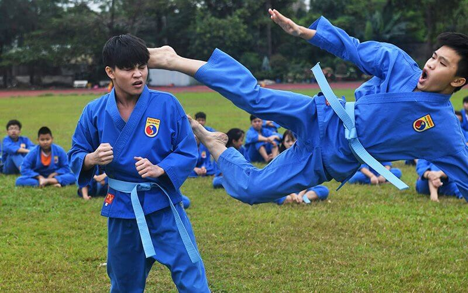
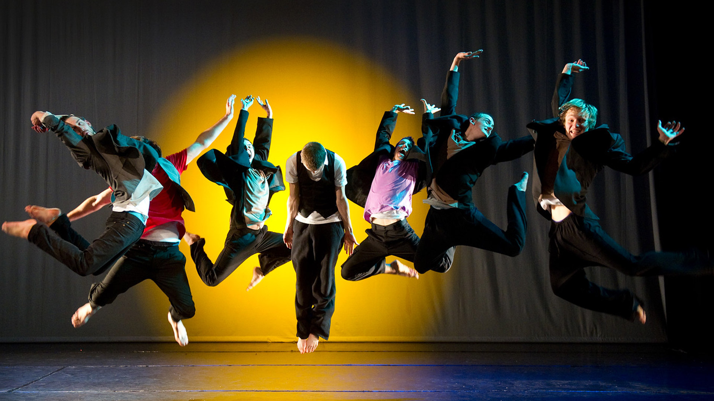

Mon profil
Bonjour, je m'appelle Thomas SRENG, j'ai 21 ans et suis un étudiant de deuxième année en BTS SIO à l'IPSSI de Montévrain. Depuis mes jeunes années, j’ai toujours été attiré par l’informatique et les nouvelles technologies. C’est tout naturellement que je me suis tourné vers ces études.
En dehors de l'informatique, je pratique régulièrement des activités sportives afin d'entretenir ma forme, le Viet-vo-dao, le tai-chi et la danse au sein du groupe Higher-crew.

Cela fait 4 ans que je pratique le Viet-Vo-Dao et du Tai-Chi au sein d'un club torcéen.
Le Viet-vo-dao est un sport de combat et art martial d'origine vietnamienne, à mains et pieds nus, où les coups sont donnés avec des mouvements de rotation.
En parallèle, pratiquer le Tai-Chi renforce le bas du corps, améliore la posture, favorise la souplesse et augmente la conscience de la position du corps dans l'espace.
Higher-Crew est un groupe de danse basé sur du Hip-Hop mais généralement du Hip-Hop coréen (K-Pop). Rejoindre ce groupe m'a permis de développer mes capacités de cohésion, d'adaptation et sociabilité.
